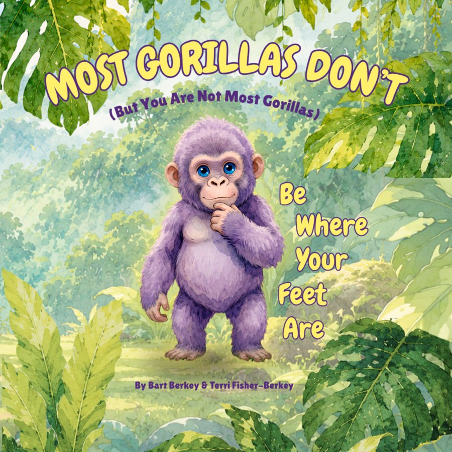

Most Gorillas Don't: Be Where Your Feet Are

Hello, I'm
To Build Creative Works That Remembers People
Hi, I'm Juliana but you can call me Juls. I'm a graduate of the Associate of Science in Development Communication and now a Bachelors of Arts in Multimedia Studies. I'm also an Operations and Growth Executive Assistant. I mixed all of this experience and academic credibility to run my newly founded company, KUNITA. A creative and advocacy-driven brand named after "gunita," which means memory and "kumita" which is to earn. I want for Filipinos to experience a livelihood worth to remember. I create contents, materials, and courses for people who wants to learn in the virtual industry, but at the same time advocate and voice out different social issues for people to make informed decisions. Outside my work, I am a theater actress, writer, and empath. I care a lot which summarizes everything about me. Basically, if we are talking about creatives, memory, messy little things, and something that needs a system, I'm probably already there all excited.
